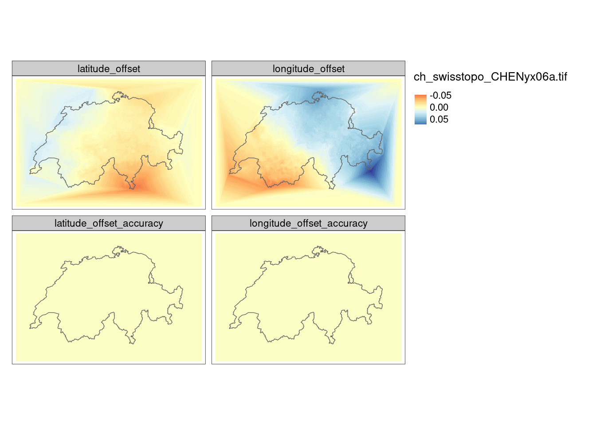
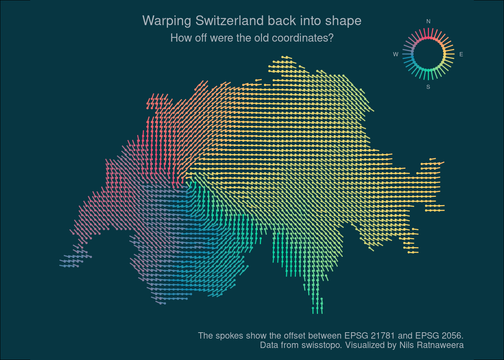

rgdal::list_coordOps("EPSG:21781", "EPSG:2056")When I started working with swiss geodata a couple of years ago, Switzerland was beginning to transition from it’s old coordinate system CH1903 LV03 to CH1903+ LV95 (EPSG 2056).
The new coordinate system was awkward from the start. First off, I suddenly was un unable to convert data from WGS84 using a custom R script that swisstopo had previously provided for CH1903 LV03. The answer to my question on a swisstopo google group (in 2017) was to use swisstopo’s REST api.
This problem was seemingly solved with the emergence of sf and it’s built-in methods to reproject coordinates easily. Until one day I realized that the coordinate transformations to and from EPSG 2056 were fairly imprecise. The transformations did not account for the spatially varying offset for which the new coordinate system was implemented in the first place.
I filed an issue on sf’s github repo beginning of 2020, but it wasn’t until recently (with PROJ 7.0.0) that I was able to precisely transform my data to and from EPSG 2056.
The issue is highlighted with the function list_coordOps() from rgdal. Apparently, the transformation was lacking a grid with the name ch_swisstopo_CHENyx06a.tif (the situation is now different, see my edit below).
Candidate coordinate operations found: 2
Strict containment: FALSE
Visualization order: TRUE
Source: EPSG:21781
Target: EPSG:2056
Best instantiable operation has only ballpark accuracy
Description: Inverse of Swiss Oblique Mercator 1903M + Ballpark geographic
offset from CH1903 to CH1903+ + Swiss Oblique Mercator
1995
Definition: +proj=pipeline +step +inv +proj=somerc +lat_0=46.9524055555556
+lon_0=7.43958333333333 +k_0=1 +x_0=600000+y_0=200000 +ellps=bessel
+step +proj=somerc +lat_0=46.9524055555556 +lon_0=7.43958333333333
+k_0=1 +x_0=2600000 +y_0=1200000 +ellps=bessel
Operation 1 is lacking 1 grid with accuracy 0.2 m
Missing grid: ch_swisstopo_CHENyx06a.tif
URL: https://cdn.proj.org/ch_swisstopo_CHENyx06a.tif
With my current version of sf and rgdal, I need to download this grid manually and move it to the PROJ directory. Running list_coordOps now shows a different output.
rgdal::list_coordOps("EPSG:21781", "EPSG:2056")
Candidate coordinate operations found: 2
Strict containment: FALSE
Visualization order: TRUE
Source: EPSG:21781
Target: EPSG:2056
Best instantiable operation has accuracy: 0.2 m
Description: Inverse of Swiss Oblique Mercator 1903M + CH1903 to
CH1903+ (1) + Swiss Oblique Mercator 1995
Definition: +proj=pipeline +step +inv +proj=somerc
+lat_0=46.9524055555556
+lon_0=7.43958333333333 +k_0=1 +x_0=600000
+y_0=200000 +ellps=bessel +step
+proj=hgridshift
+grids=ch_swisstopo_CHENyx06a.tif +step
+proj=somerc +lat_0=46.9524055555556
+lon_0=7.43958333333333 +k_0=1
+x_0=2600000 +y_0=1200000 +ellps=bessel
The downloaded file is a so called transformation grid: A raster dataset in WGS84 containing information on the lat and lon offset for a given cell.
library(tmap)
library(sf)
library(terra)
library(cowplot)
ch_swisstopo_CHENyx06a <- terra::rast("ch_swisstopo_CHENyx06a.tif")
# Swissboundaries3D data from swisstopo
landesgebiet <- read_sf("data-git-lfs/swissboundaries/swissBOUNDARIES3D_1_3_TLM_LANDESGEBIET.shp")
landesgebiet <- st_transform(landesgebiet, 2056)
tm_shape(ch_swisstopo_CHENyx06a) +
tm_raster(style = "cont",palette = "RdYlBu") +
tm_shape(landesgebiet) + tm_borders()
I now can use this grid to precisely transform coordinates to and from ESPG 2056. I will demonstrate this by visualizing the directional offset, similar to the transformation grid I downloaded.
library(dplyr)
library(ggplot2)
library(tidyr)
heading_north <- function(h){
case_when(
h>=0 & h<=90~90-h,
h>90~450-h,
TRUE~abs(h) + 90
)
}
make_grid <- function(cellsize, land){
land <- st_transform(land, 2056)
gri <- st_make_grid(land, cellsize, what = "centers")
gri2 <- st_transform(gri, 21781)
mat <- cbind(
st_coordinates(gri),
st_coordinates(gri2)
)
colnames(mat) <- c("E", "N", "X", "Y")
mat %>%
tibble::as_tibble() %>%
mutate(
E_norm = E - (X+2e6),
N_norm = N - (Y+1e6),
dist = (E_norm^2+N_norm^2)^0.5,
heading = atan2(N_norm, E_norm),
h = heading*180/pi,
heading_deg = heading_north(h)
)
}# Add some cities as labels
markers <- tribble(
~E, ~N, ~name, ~nudge_x, ~nudge_y,
2598633.750, 1200386.750, "Bern",15000,15000,
2682217.000, 1247945.250 , "Zurich",15000,-15000,
2598410, 1185268, "apparent epicenter",15000,-15000,
)
# Make my custom grid, similar to the transformation grid
df <- make_grid(1000, landesgebiet)
# https://coolors.co/ef476f-ffd166-06d6a0-118ab2-073b4c
mycols <- paste0("#",c("EF476F","FFD166","06D6A0", "118AB2","EF476F"))mygrid <- make_grid(4000, landesgebiet) %>%
st_as_sf(coords = c("E","N"), remove = FALSE) %>%
st_set_crs(2056)
mygrid <- mygrid[landesgebiet, , op = st_intersects]
plot_bg_col <- Sys.getenv("plot_bg_col")
text_col <- Sys.getenv("text_col")
main_plot <- ggplot(mygrid, aes(E, N, color = heading_deg)) +
# geom_sf(data = bb_ch, inherit.aes = FALSE, fill = plot_bg_col, color = "NA") +
geom_point(size = .4) +
geom_spoke(aes(angle = heading, radius = scales::rescale(dist, 5e3, 10e3))) +
scale_color_gradientn(colors = mycols) +
labs(title = "Warping Switzerland back into shape",
subtitle = "How off were the old coordinates?",
caption = "The spokes show the offset between EPSG 21781 and EPSG 2056.\nData from swisstopo. Visualized by Nils Ratnaweera") +
coord_equal() +
theme_void() +
theme(legend.position = "none",
plot.title = element_text(hjust = .5),
plot.subtitle = element_text(hjust = .5),
text = element_text(color = text_col),
plot.margin = margin(10,10,10,10),
panel.background = element_rect(colour = NA, fill = plot_bg_col),
plot.background = element_rect(fill = plot_bg_col,color = NA),aspect.ratio = 2/3)
deg2rad <- function(deg){deg*pi/180}
legend_df <- tibble(
angle_deg1 = seq(0,359,10),
angle_deg2 = heading_north(angle_deg1),
angle_rad = deg2rad(angle_deg2),
x = cos(angle_rad),
y = sin(angle_rad)
)
fac = 2
windrad <- tibble(
angle_deg = c(0,90,180,270),
text = c("N","E","S","W"),
angle_rad = deg2rad(heading_north(angle_deg)),
x = cos(angle_rad)*fac,
y = sin(angle_rad)*fac
)
legend_plot <- ggplot(legend_df, aes(x, y, color = angle_deg1)) +
geom_point(size = .8) +
geom_text(data = windrad, aes(label = text), color = text_col, size = 2) +
geom_spoke(aes(angle = angle_rad,radius = .6)) +
scale_color_gradientn(colors = mycols) +
coord_equal() +
theme_void() +
theme(legend.position = "none")ggdraw(main_plot) +
draw_plot(legend_plot, .95, .95, .2, .2,
hjust = 1,vjust = 1, halign = 1, valign = 3) +
theme(panel.background = element_rect(fill = plot_bg_col))
ggsave("preview.jpg", width = 15, height = 10, units = "cm")EDIT (2022-04-24):
At the time of writing this blogpost, the bash command to download and move the file to the correct place was as follows:
wget https://cdn.proj.org/ch_swisstopo_CHENyx06a.tif`
sudo mv ch_swisstopo_CHENyx06a.tif /usr/share/proj/Today however, I needed to download a zip file and unzip it to /usr/share/proj/. I assume this will change again in the near future.
https://download.osgeo.org/proj/proj-datumgrid-europe-1.5.zip
sudo unzip proj-datumgrid-europe-1.5 /usr/share/proj/